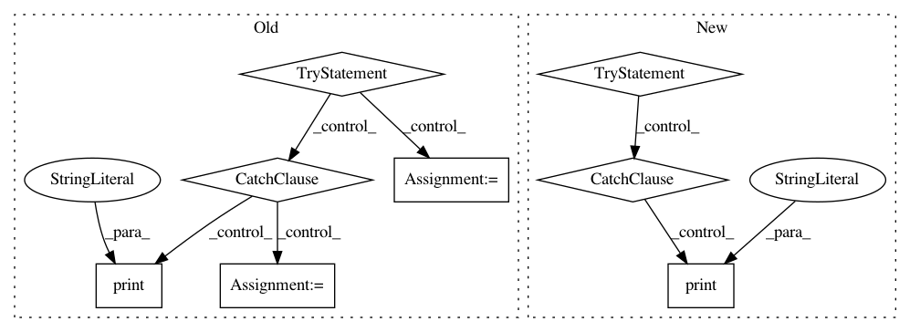

f4a629a3b9437fafb882793f59014f6ce31e86aa,pynets/nodemaker.py,,RSN_fetch_nodes_and_labels,#Any#Any#Any#Any#Any#,455
Before Change
label_names = dict_df["Region"].tolist()
//print(label_names)
else:
try:
label_names = nodemaker.AAL_naming(coords)
//print(label_names)
except:
print("AAL reference labeling failed!")
label_names = np.arange(len(coords) + 1)[np.arange(len(coords) + 1) != 0].tolist()
except:
try:
label_names = nodemaker.AAL_naming(coords)
except:
After Change
try:
ref_txt = "%s%s%s%s" % (str(Path(base_path).parent), "/labelcharts/", atlas_select, ".txt")
if os.path.exists(ref_txt):
try:
dict_df = pd.read_csv(ref_txt, sep="\t", header=None, names=["Index", "Region"])
label_names = dict_df["Region"].tolist()
//print(label_names)
except RuntimeError:
print("ERROR: label names from label reference file failed to populate or are invalid")
else:
raise FileNotFoundError("ERROR: label reference file not found")
except:
try:
In pattern: SUPERPATTERN
Frequency: 3
Non-data size: 8
Instances
Project Name: dPys/PyNets
Commit Name: f4a629a3b9437fafb882793f59014f6ce31e86aa
Time: 2018-07-18
Author: dpisner@utexas.edu
File Name: pynets/nodemaker.py
Class Name:
Method Name: RSN_fetch_nodes_and_labels
Project Name: huggingface/neuralcoref
Commit Name: 70cab1d286a8717185e5b342f1923a80fc9a90a0
Time: 2019-10-22
Author: svlandeg@users.noreply.github.com
File Name: neuralcoref/train/conllparser.py
Class Name: ConllCorpus
Method Name: read_corpus
Project Name: dPys/PyNets
Commit Name: f4a629a3b9437fafb882793f59014f6ce31e86aa
Time: 2018-07-18
Author: dpisner@utexas.edu
File Name: pynets/nodemaker.py
Class Name:
Method Name: WB_fetch_nodes_and_labels